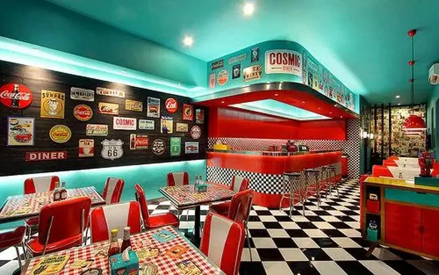
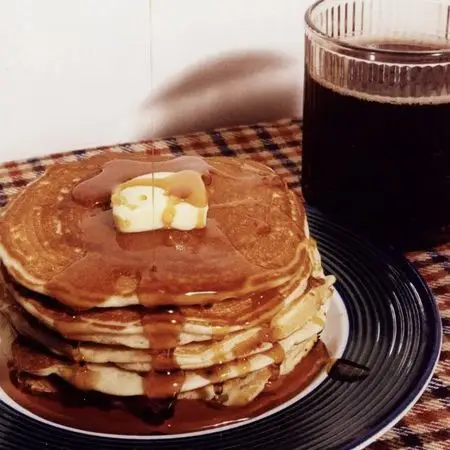
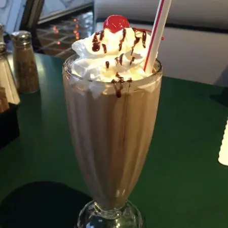

Welcome to Ruby's

Step off the highway and back in time. Ruby's Route 66 has been serving up all-day breakfast and old-fashioned fountain drinks since the golden age of the open road. Whether you're a local stopping in for pancakes or a road-tripper chasing the original Route 66 diner vibes, pull up a stool and stay for a while.
Today's Hot Picks
-

The Rocket 88 Stack
Three fluffy buttermilk pancakes stacked sky-high, drizzled in warm maple syrup and finished with a scoop of butter that melts down the sides like a classic diner commercial.
-

Jitterbug Malt
A hand-spun chocolate malt served in a frosted glass with extra malt powder on top, whipped up the old-fashioned way at the soda fountain counter.
-

Blue Suede Bacon & Eggs
Two eggs any style, thick-cut smoked bacon, and hash browns served on a checkerboard plate, named as a nod to the era's most famous shoes.
Fun Facts
Buckle up, because Route 66 has been the Mother Road of American road trips since 1926 up to the 1950s, where this stretch of asphalt was lined bumper-to-bumper with neon signs, drive-in diners, and travelers chasing that open-road freedom. Nat King Cole even wrote a hit song titled "(Get Your Kicks on) Route 66" about it, and the road later inspired its own hit TV show and countless movie, proof that this highway wasn't just a way to get somewhere, it became part of the American story itself. Get the full scoop on Route 66's history. And while you are at it, check out our jukebox and soda counters which are a complete throwback to the golden age of the soda fountain, when checkered floors, leather booths, and a jukebox spinning the hits were as much part of the experience as the food was. Dig deeper into soda fountain history here.
Visit Us
Ruby's Route 66118 Route 66
Seligman, AZ 86337
Call us at 123-456-7890 to place an order or ask about hours.